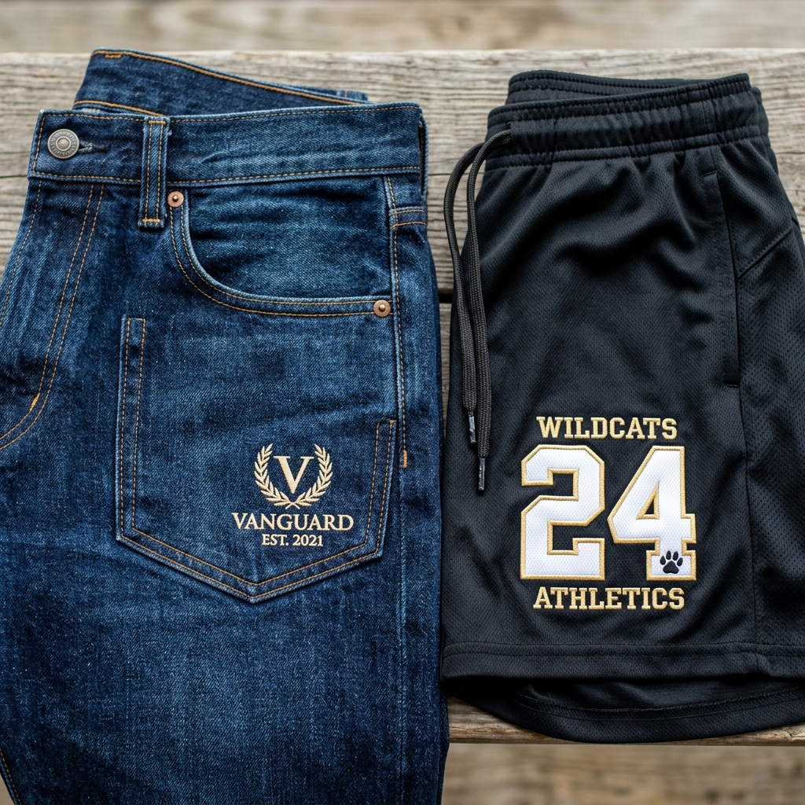

La moda en el Istmo está cambiando — y tú puedes liderar el estilo
Si algo define a Juchitán de Zaragoza es la identidad: la forma en que las personas se visten siempre ha dicho algo sobre quiénes son. Hoy, esa tradición de significar con la ropa se está fusionando con la moda contemporánea. Cada vez más jóvenes, deportistas, comerciantes y familias del Istmo buscan piezas únicas que nadie más tenga — prendas que lleven su nombre, su logo, sus colores o su firma personal.
Y eso, en Juchitán, ya es una realidad. Los pantalones en Juchitán ya no son solo de mezclilla genérica — hoy se pueden personalizar con bordado digital directo sobre la tela, dándoles un valor exclusivo que ningún artículo de tienda puede igualar. Lo mismo aplica para shorts, pants de gimnasio, uniformes deportivos y hasta ropa interior.
En Bortex Bordados Juchitán nos especializamos en convertir prendas ordinarias en piezas con identidad propia. En este artículo te contamos todo lo que podemos hacer con tus prendas inferiores — desde la mezclilla hasta los boxers.
"La ropa dice quién eres antes de que abras la boca. ¿Por qué conformarse con algo genérico cuando puedes tener algo tuyo?"
👖 Pantalones Personalizados: Tu Estilo Cosido en Cada Puntada
Cuando la mayoría de la gente piensa en personalización con bordado, piensa inmediatamente en gorras o playeras. Pero las prendas inferiores ofrecen un lienzo fascinante para el diseño — y en el Istmo, muy pocos lo están aprovechando. Eso significa que tú puedes ser el primero en tu círculo en tener pantalones personalizados que realmente destaquen.
¿Sobre qué telas podemos bordar?
En Bortex trabajamos con los tres tipos de tela más comunes en pantalones y prendas inferiores del mercado:
- Mezclilla (denim): La tela más popular y resistente. El bordado sobre mezclilla crea un contraste visual increíble — los hilos de colores vivos sobre el índigo del denim producen un efecto premium que recuerda a las marcas de moda de lujo. Ideal para pantalones de calle, pantalones de manta bordados y shorts de mezclilla.
- Gabardina: Tela fina, elegante y muy usada en pantalones de vestir o de trabajo. El bordado sobre gabardina luce impecable y profesional — perfecto para comerciantes, empresas o personas que quieren llevar su nombre o logo al trabajo con discreción y clase.
- Pants (tela deportiva): El material favorito para gimnasio, práctica deportiva y uso casual cotidiano. Bordamos sobre pants de poliéster, algodón y mezclas. El diseño queda firme y no se deforma con el uso ni con el lavado frecuente.
¿Qué tipo de diseño va mejor en un pantalón?
La ubicación del bordado en un pantalón es tan importante como el diseño mismo. En Bortex recomendamos estas posiciones que funcionan de maravilla:
- Logo pequeño en el bolsillo: Este es el detalle más elegante y efectivo. Un logo bien ejecutado en el bolsillo trasero o frontal — del tamaño de un sello postal — transforma completamente la percepción de la prenda. Es el mismo recurso que usa Levi's con su etiqueta de cuero, o que usan las marcas de ropa de lujo con sus emblemas discretos. Un logo bordado en el bolsillo le da un valor exclusivo a la prenda que ningún diseño estampado puede replicar.
- Diseño lateral en la pierna: Una franja de texto, un logotipo alargado o la inicial del dueño en la parte lateral de la pierna crea una línea visual que alarga la silueta y da un look muy moderno, muy alineado con las tendencias actuales de streetwear y moda deportiva.
- Iniciales en la cinturilla: Un toque íntimo y personal, especialmente popular como regalo o para prendas de uso personal. Las iniciales bordadas en la parte interior o exterior de la cinturilla son el detailing que los amantes de la moda aprecian en profundidad.
- Parche o escudo en la rodilla: Muy útil para uniformes de trabajo o para un look urbano con carácter. Un parche bordado directamente sobre la rodilla del pantalón añade personalidad y contexto cultural al diseño.
Tanto si traes tu pantalón favorito para bordarlo como si eliges de nuestro catálogo de prendas, el resultado es el mismo: una prenda personalizada que nadie más tiene en Juchitán.
🏋️ Ropa Deportiva Personalizada: Del Gimnasio al Torneo con Estilo
En el Istmo de Tehuantepec, el deporte vive en las calles, en las canchas y en los gimnasios. Desde el pelotero del barrio hasta el equipo que compite en la liga municipal, todos merecen verse profesionales. La ropa deportiva personalizada ya no es exclusiva de equipos de primera división — en Bortex la ponemos al alcance de cualquier deportista, entrenador o club del Istmo.
Shorts Personalizados: Comodidad y Presencia en Cancha
Los shorts personalizados son una de las prendas deportivas más solicitadas que manejamos. Ya sea para fútbol, básquetbol, voleibol, running o simplemente para sentirte único en el gimnasio, un short con tu nombre, número o logo marca la diferencia desde que entras a la cancha.
- Nombre y número del jugador: El estándar en cualquier deporte de equipo. El número bordado sobre el mesh o la tela deportiva del short complementa el jersey y da cohesión visual a todo el uniforme.
- Logo del equipo o club: En el muslo, en la cinturilla o en la parte lateral — el escudo o nombre del equipo bordado convierte los shorts en parte del uniforme oficial.
- Diseños para gimnasio: Iniciales, frases motivacionales cortas o el logo de tu gym favorito, bordados en la pierna del short. Una forma de demostrar pertenencia y estilo dentro del gimnasio.
Pants para Equipos: Unidad desde el Calentamiento
Los pants para equipos son el uniforme de calentamiento que identifica al equipo antes de que comience el partido. Un conjunto de pants con el nombre del equipo y el número del jugador bordados proyecta profesionalismo y cohesión desde el primer momento. En Bortex bordamos pantalones y partes superiores de pants para pedidos por mayoreo — desde equipos escolares hasta clubes deportivos del municipio.
Bermudas Bordadas: La Prenda Versátil del Istmo
Con el clima cálido del Istmo, las bermudas bordadas son ideales tanto para el deporte como para el uso casual de todos los días. Una bermuda de buena calidad con un logo bordado en el muslo o un diseño lateral es la prenda perfecta para torneos locales, paseos en la playa de Salina Cruz o simplemente para el mercado dominical. En Bortex las personalizamos en tela de gabardina, mezclilla o deportiva según tu preferencia.
¿Por qué el bordado resiste mejor que el estampado en ropa deportiva?
Esta es la pregunta que más nos hacen los capitanes de equipo y coordinadores de liga. La respuesta es simple: el bordado de máquina resiste el movimiento y las lavadas constantes porque el hilo está cosido dentro de la tela, no pegado sobre ella. Comparemos:
- Transfer termoadhesivo: Se despega con el sudor, la fricción del juego y los lavados frecuentes. Tras dos o tres temporadas, los números y logos se levantan por las orillas y terminan cayéndose.
- Serigrafía: La tinta se agrieta con los movimientos repetitivos — saltos, barridas, carreras. En zonas de alta flexión como la cintura y las piernas, la tinta se rompe en pocas semanas de uso intensivo.
- Bordado Bortex: El hilo de poliéster no se degrada con el sudor, los detergentes ni los ciclos de lavado a temperatura media. Un short bordado en Bortex llega al final de la temporada con el mismo diseño del primer día — y sobrevive muchas temporadas más.
🎁 Boxers y Lencería Personalizada: El Detalle que Sorprende
Aquí es donde la personalización se vuelve verdaderamente especial. Si piensas que el bordado es solo para uniformes y gorras, espera a ver lo que podemos hacer en las prendas más íntimas. Los boxers personalizados y la lencería personalizada son una de las ideas de regalo más originales y memorables que existen — y en Juchitán, esta opción está disponible en Bortex.
Boxers Personalizados: El Regalo que Todos Recuerdan
¿Primer aniversario? ¿Cumpleaños de tu mejor amigo? ¿Una broma a un colega del trabajo? Los boxers personalizados con bordado digital son el regalo perfecto para todas estas ocasiones. Podemos bordar:
- Iniciales o nombre completo: Un monograma bordado discretamente en la cinturilla o en el muslo — clase y personalidad en la prenda más íntima.
- Figuras pequeñas y detalles creativos: Un corazón, un emoji, el escudo de tu equipo favorito, la silueta de tu mascota o cualquier figura pequeña que tenga un significado especial para la persona.
- Frases cortas: Un mensaje privado, una broma entre amigos, una frase de amor — el lugar más inesperado para el mensaje más íntimo.
- Fecha de aniversario: Un regalo de bodas, primer aniversario o San Valentín muy por encima de lo convencional.
Lo mejor del bordado digital en prendas íntimas es la comodidad: el hilo queda completamente integrado a la tela con un acabado suave al reverso que no molesta al usar la prenda. No hay relieve áspero, no hay materiales que rocen la piel. Solo el diseño, perfectamente ejecutado, sin comprometer el confort.
Lencería Personalizada: Elegancia Bordada
Más allá de los boxers, también trabajamos con prendas de lencería y ropa interior femenina que quieras personalizar. La lencería personalizada con bordado es una alternativa elegante y duradera a las impresiones o bordados en calor que pierden calidad rápidamente. Las iniciales, una flor pequeña o un motivo ornamental bordado en hilo fino sobre encaje o tela suave elevan cualquier prenda a una categoría completamente diferente.
Este servicio es especialmente popular como regalo de aniversario de pareja, como recuerdo de boda o como detalle personalizado para despedidas de soltera. Si tienes una idea en mente, cuéntanos y la hacemos realidad.
⚙️ ¿Cómo Personalizamos tu Prenda? El Proceso Bortex
Hacemos que personalizar tus prendas sea sencillo y sin complicaciones. Así funciona nuestro proceso:
- Paso 1 — Trae tu prenda o elige del catálogo: Puedes traer tu pantalón, short, pants o boxer favorito para bordarlo directamente. O si prefieres, podemos conseguirla de nuestro catálogo de prendas disponibles en distintas tallas y colores.
- Paso 2 — Comparte tu diseño: Envíanos una foto de tu logo, tus iniciales o el diseño que tienes en mente. Lo puedes mandar por WhatsApp — no necesitas un archivo de diseñador profesional; con una imagen clara es suficiente para empezar.
- Paso 3 — Ponchado y digitalización: Nuestro equipo convierte tu diseño al archivo de bordado digital (ponchado). Este proceso asegura que cada puntada quede perfectamente calibrada para la tela de tu prenda.
- Paso 4 — Muestra y aprobación: Realizamos una pieza de muestra para que veas el resultado real antes de proceder con el pedido completo. Tu aprobación es la única que importa.
- Paso 5 — Entrega lista: Nos ajustamos a tu tiempo. Para pedidos individuales, los tiempos son cortos. Para pedidos de equipos completos, coordinamos la producción para que todo esté listo en la fecha que necesitas.
🛍️ ¿Listo para Tener la Prenda Más Única de Juchitán?
Ya sea que quieras pantalones personalizados para presumir en el Istmo, shorts personalizados para tu equipo deportivo, bermudas bordadas para el uso diario, pants para equipos completos o un par de boxers personalizados como regalo original — en Bortex Bordados Juchitán lo hacemos realidad con la calidad y el cuidado que tu prenda merece.
Trae tus propias prendas o elige del catálogo disponible en nuestro local. Atendemos pedidos individuales y por mayoreo para grupos, equipos y empresas del Istmo de Tehuantepec.
👖🩳 ¿Cuánto cuesta personalizar tu prenda?
Cotizamos sin compromiso por WhatsApp. Cuéntanos qué prenda tienes, dónde quieres el diseño y el tamaño aproximado — y te damos precio en minutos. También puedes usar nuestro cotizador en línea si prefieres.
Cotizar por WhatsApp Cotización formal en línea